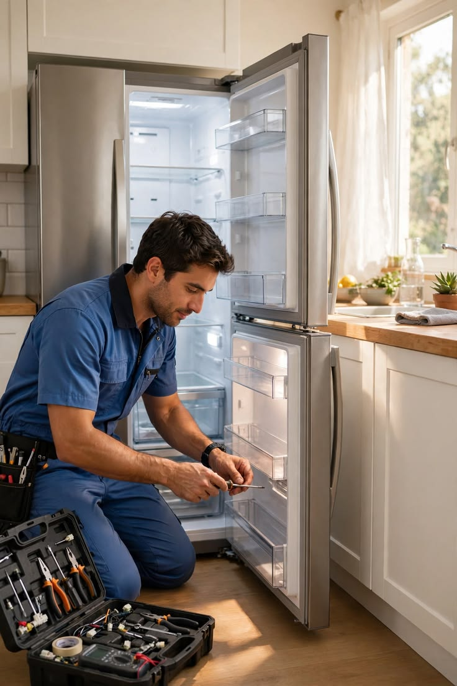

صيانة غسالات الأطباق
أطباق نظيفة بلا عناء… نعيد غسالتك للعمل بكفاءة
- عدم تصريف المياه
- تسريب المياه
- الأطباق غير نظيفة
- التسخين والتجفيف
فنيون متخصصون يشخّصون العطل بدقة ويصلحونه بسرعة واحترافية. اتصل الآن واحجز موعد زيارة يناسبك.
أربعة أقسام متخصصة، لكل قسم صفحات تفصيلية للأعطال والحلول.
أطباق نظيفة بلا عناء… نعيد غسالتك للعمل بكفاءة

تبريد يعتمد عليه… نحافظ على طعامك وعلى ثلاجتك

تجميد قوي وحفظ آمن… نصلح الديب فريزر ونحافظ على مخزونك

غسيل بلا توقف… نصلح غسالتك ونعيدها للعمل بكفاءة
خبرة تزيد على 25 سنة في صيانة الأجهزة المنزلية تجعلنا نصل للعطل بسرعة ودقة.
نشرح لك العطل وتكلفة إصلاحه قبل أن نبدأ، بدون مفاجآت.
نحدد لك أقرب موعد زيارة ممكن ونصل إليك في الوقت المتفق عليه.
نحرص على جودة الإصلاح وقطع الغيار المناسبة لموديل جهازك.
اختر جهازك لتعرف الماركات التي نصلحها.
عرض صفحة الماركات · أسماء الماركات ملك لأصحابها، وذكرها هنا للدلالة على أنواع الأجهزة التي نتعامل معها ولا يعني أننا وكلاء معتمدون لها.
كلّمنا هاتفيًا أو عبر واتساب واذكر نوع الجهاز والعطل.
نتفق على أقرب وقت يناسبك لوصول الفني.
يفحص الفني الجهاز ويوضح لك العطل والتكلفة قبل البدء.
نُصلح العطل ونجرّب الجهاز أمامك للتأكد من عمله.
نصلك أينما كنت في الدلتا، اختر محافظتك لمعرفة المدن التي نغطيها.
املأ النموذج وسيتم تجهيز رسالة واتساب جاهزة.
نتعامل مع معظم الماركات المحلية والعالمية. عند التواصل أخبرنا بنوع الجهاز وماركته وموديله لنؤكد لك.
نعم، يفحص الفني الجهاز أولًا ويبلغك بالعطل والتكلفة، ولا نبدأ الإصلاح إلا بعد موافقتك.
تُصلح معظم الأعطال الشائعة في الزيارة نفسها إذا توفرت القطعة. وبعض الحالات تحتاج قطعة غيار أو وقتًا أطول، ونخبرك بذلك بعد الفحص.
بالتأكيد. أرسل لنا رسالة بنوع الجهاز ووصف العطل وعنوانك، وسنرد عليك لتحديد موعد الزيارة.
نخدم محافظات الدلتا: الغربية والدقهلية وكفر الشيخ والشرقية والمنوفية والبحيرة ودمياط. تواصل معنا لنؤكد لك تغطية مدينتك أو قريتك.
فنيونا جاهزون لتحديد موعد زيارة يناسبك. نستقبل اتصالاتك على مدار الساعة.